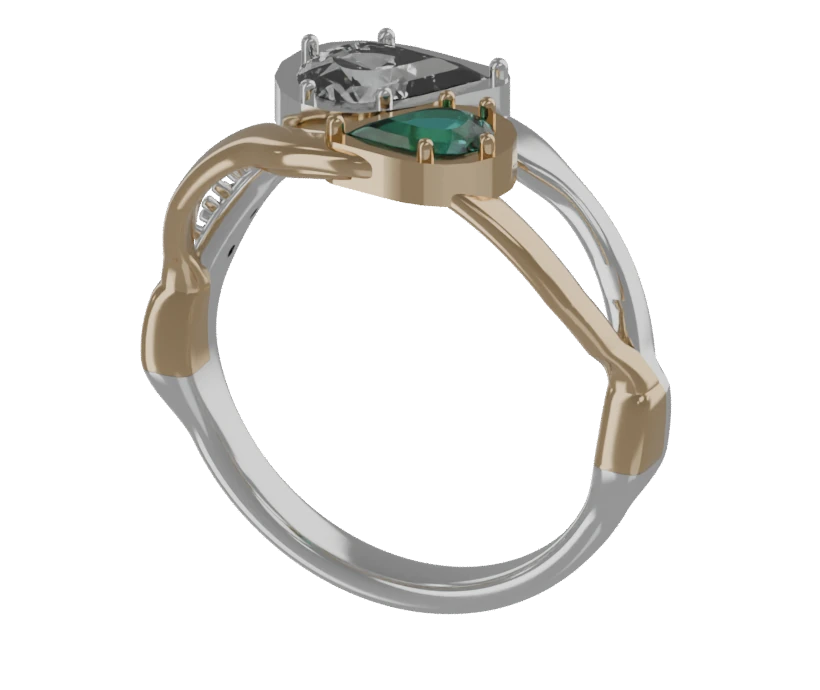
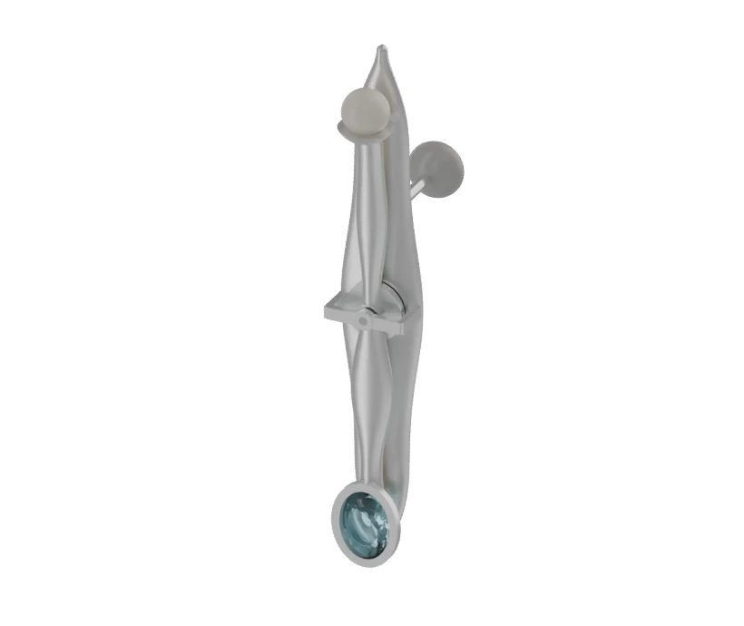
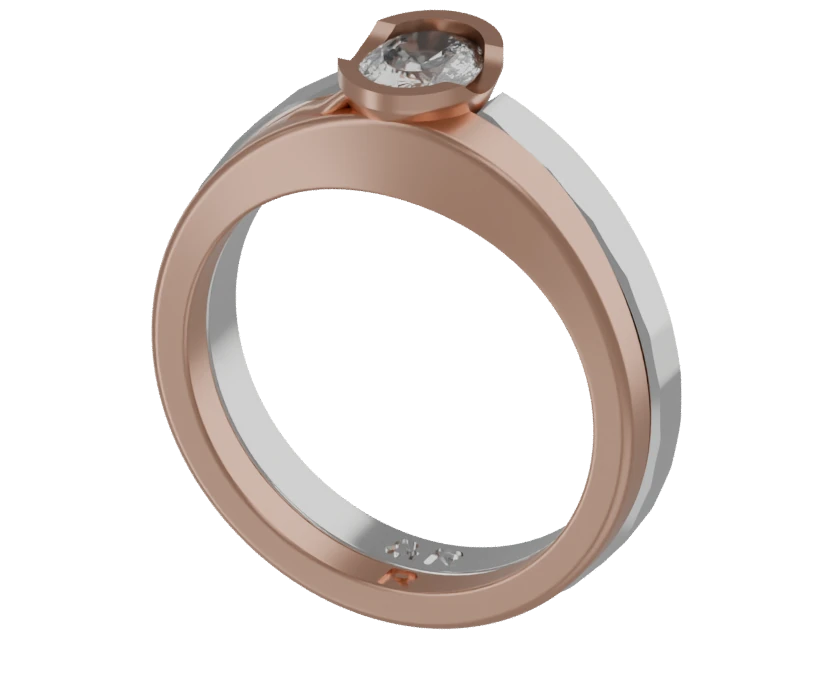
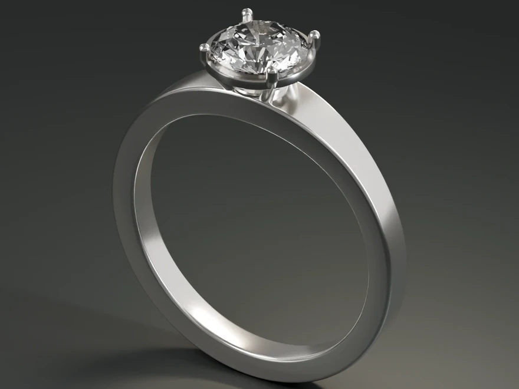
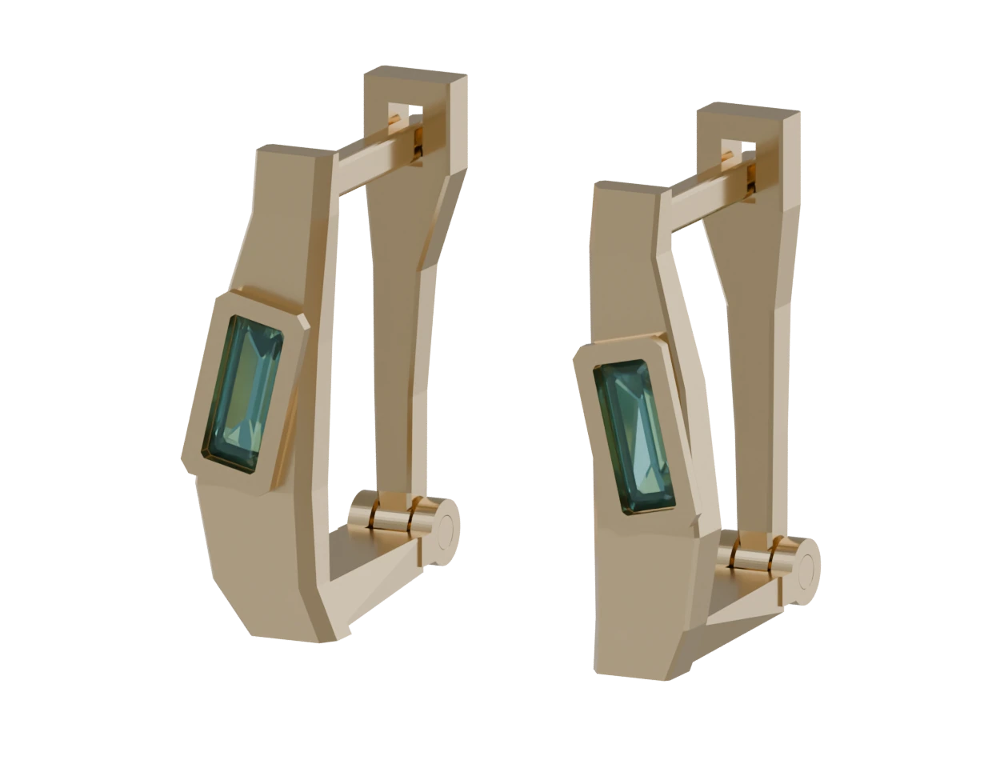

Дуэт R4
Две отливки сходятся на штифтах. В 3D можно раздвинуть сплавы и рассмотреть стык. В техлисте приведены результаты проверки посадки семи камней.
Размер 17 · Две груши и пять камней паве · Расчётная масса заготовок 3,83 г (585) / 4,40 г (750)

Пауза в движении
Жемчужина и аквамарин уравновешивают стрелку. Ползунок показывает, как стрелка открывает золотую вставку при отклонении от центра.
Аквамарин и жемчуг · Ход ±16° · Расчётная масса серьги 4,16 г

Две линии
Розовое кольцо несёт овал, белое принимает оправу в седло. Раздвиньте пару или рассмотрите выемку на отдельной шинке.
Размер 17 · Овал 4,5 × 6,0 мм · Расчётная масса двух заготовок 7,61 г (585) / 8,74 г (750)

Классический солитер
Один круглый камень и четыре открытых крапана. В комплекте — цельная металлическая заготовка в STL и сборка Rhino с отдельной вставкой.
Размер 17 · Вставка Ø 6,0 мм · Металл около 4,23 г в 750 пробе

Консоль R3
Диагональная грань ведёт к багету. В профиль видно, как гарпун входит в окно швензы и удерживает замок.
Проём 10 × 7 мм · Ось Ø 0,80 мм · Расчётная масса пары с камнями 3,80 г (Au 585)